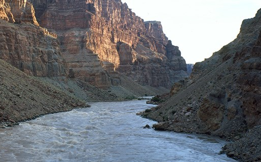
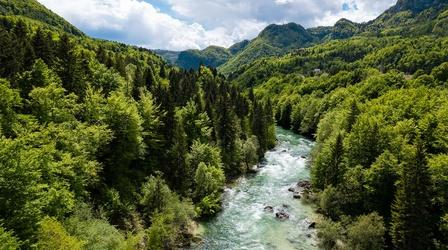
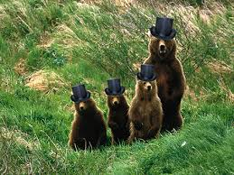

There are a variety of rivers to raft on!


There are many rivers, including the Archvile River, and the Twisty Turny River!
All of them provide a fun rafting experience! They have been put in different categories based on intensity, those being
Demon at the most intense, and baby at the most calm. The Archvile River, is Demon rank, with the most intense rapids that
we offer. The Twisty Turny River has baby ranking for being the most calm river we offer.
There are also a lot of animals near our rivers!


There are also a variety of animals at our rivers! There are bears with top hats and gorillas somehow! There have also been
snakes and chickens spotted near our rivers. Now, you may be thinking, "Aren't some of these animals rather dangerous?" And
you would be right. Good luck.